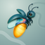
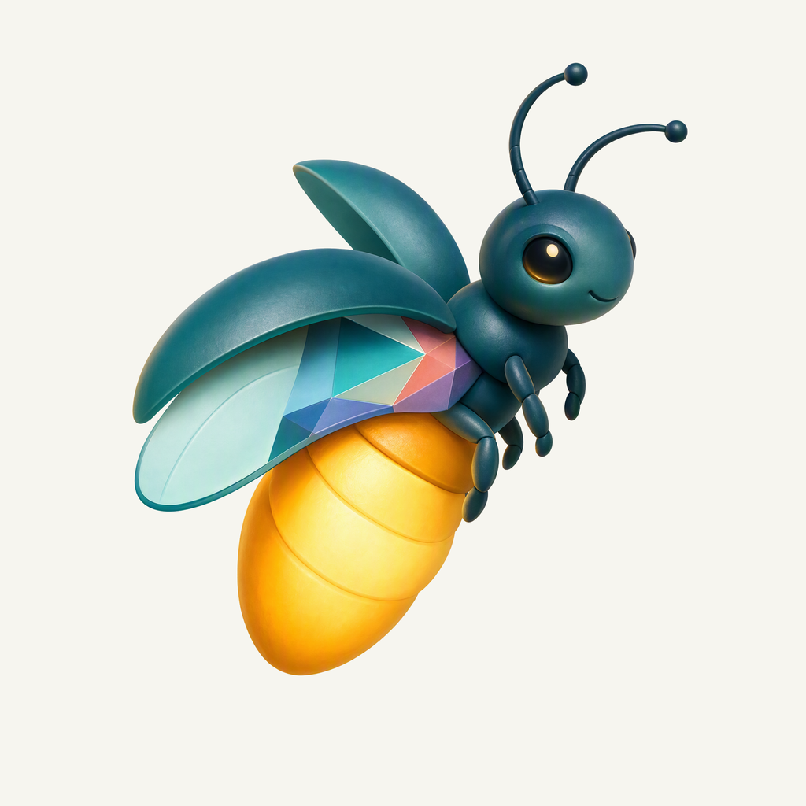
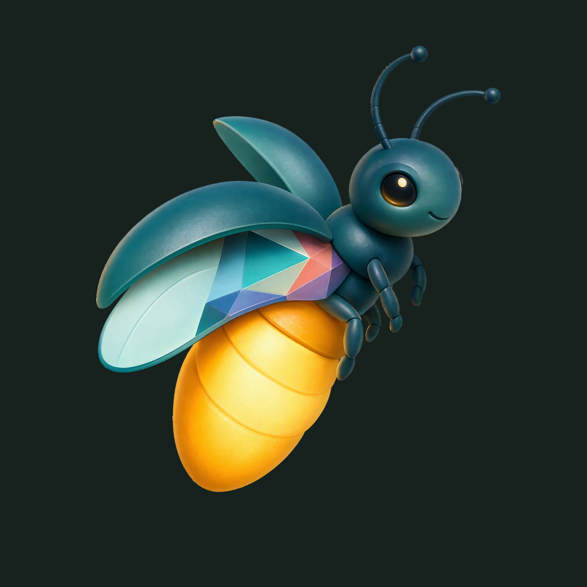

01 / Composition
The quiet lantern
A complete firefly rises toward the upper right. Its amber abdomen carries the visual weight; parted wing cases suggest the gesture of opening pages.
Animal family · Third family study
Superseded after owner feedback: broader facets and an external flame are required. A small light for the next thought.
Superseded direction · finishing 02
Native 2048 × 2048
01 / Composition
A complete firefly rises toward the upper right. Its amber abdomen carries the visual weight; parted wing cases suggest the gesture of opening pages.
02 / Drawing
A matte blue-green shell surrounds a warm, luminous abdomen. Connected coral, violet, and blue wing inlays carry the family’s faceted accents into a more sculptural character.
03 / Presentation
A muted sea-glass field, clear tonal curves, and shallow shadows support the teal silhouette and warm light. The existing blog palette is recorded separately.
The same artwork at actual display sizes.

At 16 px, the teal-and-gold diagonal and bright abdomen carry the identity. The eye, antennae, legs, and individual inlays simplify; the complete character is clearer at 32 px and above.
A proposed sea-glass field, with colors sampled from the native firefly artwork.
Select a swatch to copy its hex value. Firefly’s existing site primary, #3C83F6, remains a separate UI color.
One foreground, checked on two contrasting backgrounds.


Azure Foundry · gpt-image-2 · native 2048 × 2048
Loading prompt…


{kind=link}
{kind=link}
{kind=link}
{kind=link}
{kind=link}